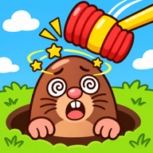

Mole Bonk
Bonk the moles, spare the bunny. A fast reflex game in 26 languages.Tap the moles that pop out of their holes, but never touch the bunny. Endless play, 30 missions, a Daily Run and unlockable characters. By bakby games.
Support: berkayanik@gmail.com